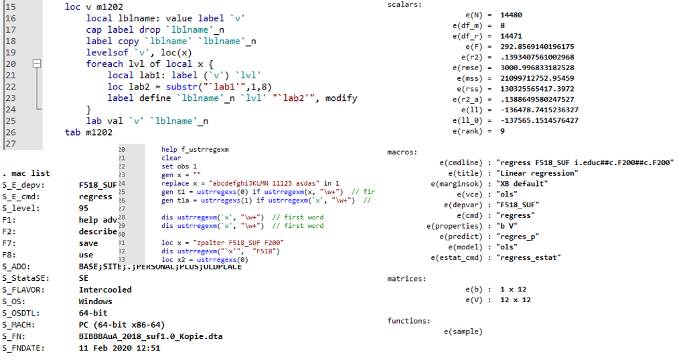

Stata für Fortgeschrittene: Programmieren mit Postestimates, Macros und Schleifen in Stata
2021-12-06
Herzlich Willkommen
Hier entsteht das Begleitskript für die Weiterbildung Programmieren mit Postestimates, Macros und Schleifen in Stata am BIBB von Andreas Filser am 17.12.2021
